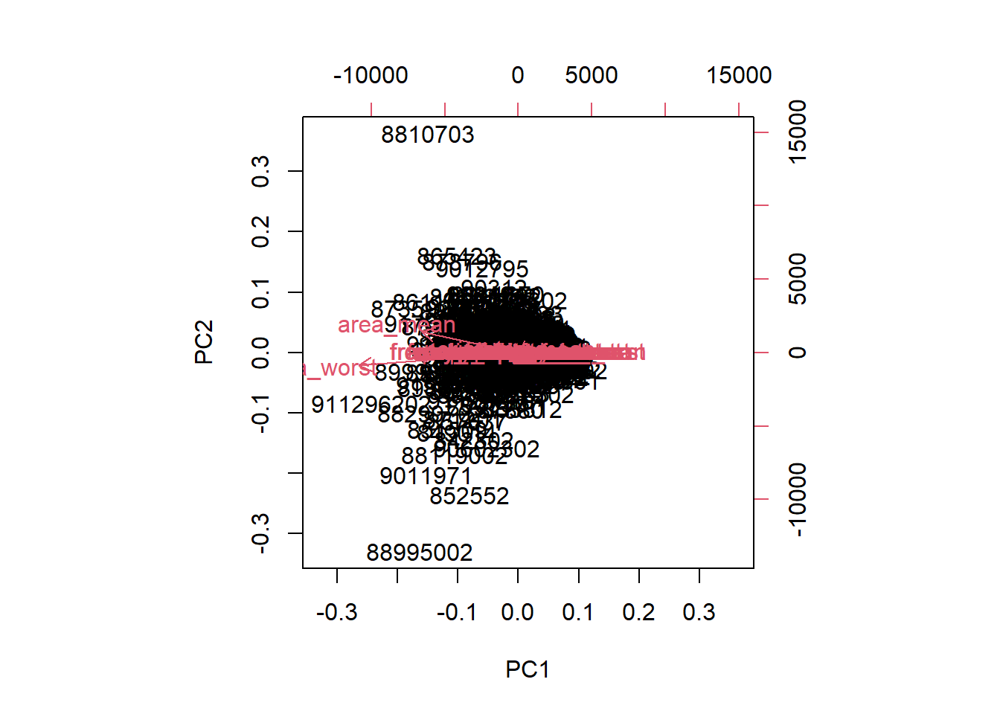

#Import Wisconsin Cancer data
url <- "https://bioboot.github.io/bimm143_S20/class-material/WisconsinCancer.csv"
wisc.df <- read.csv(url, row.names=1)
#preview data
head(wisc.df) diagnosis radius_mean texture_mean perimeter_mean area_mean
842302 M 17.99 10.38 122.80 1001.0
842517 M 20.57 17.77 132.90 1326.0
84300903 M 19.69 21.25 130.00 1203.0
84348301 M 11.42 20.38 77.58 386.1
84358402 M 20.29 14.34 135.10 1297.0
843786 M 12.45 15.70 82.57 477.1
smoothness_mean compactness_mean concavity_mean concave.points_mean
842302 0.11840 0.27760 0.3001 0.14710
842517 0.08474 0.07864 0.0869 0.07017
84300903 0.10960 0.15990 0.1974 0.12790
84348301 0.14250 0.28390 0.2414 0.10520
84358402 0.10030 0.13280 0.1980 0.10430
843786 0.12780 0.17000 0.1578 0.08089
symmetry_mean fractal_dimension_mean radius_se texture_se perimeter_se
842302 0.2419 0.07871 1.0950 0.9053 8.589
842517 0.1812 0.05667 0.5435 0.7339 3.398
84300903 0.2069 0.05999 0.7456 0.7869 4.585
84348301 0.2597 0.09744 0.4956 1.1560 3.445
84358402 0.1809 0.05883 0.7572 0.7813 5.438
843786 0.2087 0.07613 0.3345 0.8902 2.217
area_se smoothness_se compactness_se concavity_se concave.points_se
842302 153.40 0.006399 0.04904 0.05373 0.01587
842517 74.08 0.005225 0.01308 0.01860 0.01340
84300903 94.03 0.006150 0.04006 0.03832 0.02058
84348301 27.23 0.009110 0.07458 0.05661 0.01867
84358402 94.44 0.011490 0.02461 0.05688 0.01885
843786 27.19 0.007510 0.03345 0.03672 0.01137
symmetry_se fractal_dimension_se radius_worst texture_worst
842302 0.03003 0.006193 25.38 17.33
842517 0.01389 0.003532 24.99 23.41
84300903 0.02250 0.004571 23.57 25.53
84348301 0.05963 0.009208 14.91 26.50
84358402 0.01756 0.005115 22.54 16.67
843786 0.02165 0.005082 15.47 23.75
perimeter_worst area_worst smoothness_worst compactness_worst
842302 184.60 2019.0 0.1622 0.6656
842517 158.80 1956.0 0.1238 0.1866
84300903 152.50 1709.0 0.1444 0.4245
84348301 98.87 567.7 0.2098 0.8663
84358402 152.20 1575.0 0.1374 0.2050
843786 103.40 741.6 0.1791 0.5249
concavity_worst concave.points_worst symmetry_worst
842302 0.7119 0.2654 0.4601
842517 0.2416 0.1860 0.2750
84300903 0.4504 0.2430 0.3613
84348301 0.6869 0.2575 0.6638
84358402 0.4000 0.1625 0.2364
843786 0.5355 0.1741 0.3985
fractal_dimension_worst
842302 0.11890
842517 0.08902
84300903 0.08758
84348301 0.17300
84358402 0.07678
843786 0.12440#remove first column
wisc.data <- wisc.df[,-1]
head(wisc.data) radius_mean texture_mean perimeter_mean area_mean smoothness_mean
842302 17.99 10.38 122.80 1001.0 0.11840
842517 20.57 17.77 132.90 1326.0 0.08474
84300903 19.69 21.25 130.00 1203.0 0.10960
84348301 11.42 20.38 77.58 386.1 0.14250
84358402 20.29 14.34 135.10 1297.0 0.10030
843786 12.45 15.70 82.57 477.1 0.12780
compactness_mean concavity_mean concave.points_mean symmetry_mean
842302 0.27760 0.3001 0.14710 0.2419
842517 0.07864 0.0869 0.07017 0.1812
84300903 0.15990 0.1974 0.12790 0.2069
84348301 0.28390 0.2414 0.10520 0.2597
84358402 0.13280 0.1980 0.10430 0.1809
843786 0.17000 0.1578 0.08089 0.2087
fractal_dimension_mean radius_se texture_se perimeter_se area_se
842302 0.07871 1.0950 0.9053 8.589 153.40
842517 0.05667 0.5435 0.7339 3.398 74.08
84300903 0.05999 0.7456 0.7869 4.585 94.03
84348301 0.09744 0.4956 1.1560 3.445 27.23
84358402 0.05883 0.7572 0.7813 5.438 94.44
843786 0.07613 0.3345 0.8902 2.217 27.19
smoothness_se compactness_se concavity_se concave.points_se
842302 0.006399 0.04904 0.05373 0.01587
842517 0.005225 0.01308 0.01860 0.01340
84300903 0.006150 0.04006 0.03832 0.02058
84348301 0.009110 0.07458 0.05661 0.01867
84358402 0.011490 0.02461 0.05688 0.01885
843786 0.007510 0.03345 0.03672 0.01137
symmetry_se fractal_dimension_se radius_worst texture_worst
842302 0.03003 0.006193 25.38 17.33
842517 0.01389 0.003532 24.99 23.41
84300903 0.02250 0.004571 23.57 25.53
84348301 0.05963 0.009208 14.91 26.50
84358402 0.01756 0.005115 22.54 16.67
843786 0.02165 0.005082 15.47 23.75
perimeter_worst area_worst smoothness_worst compactness_worst
842302 184.60 2019.0 0.1622 0.6656
842517 158.80 1956.0 0.1238 0.1866
84300903 152.50 1709.0 0.1444 0.4245
84348301 98.87 567.7 0.2098 0.8663
84358402 152.20 1575.0 0.1374 0.2050
843786 103.40 741.6 0.1791 0.5249
concavity_worst concave.points_worst symmetry_worst
842302 0.7119 0.2654 0.4601
842517 0.2416 0.1860 0.2750
84300903 0.4504 0.2430 0.3613
84348301 0.6869 0.2575 0.6638
84358402 0.4000 0.1625 0.2364
843786 0.5355 0.1741 0.3985
fractal_dimension_worst
842302 0.11890
842517 0.08902
84300903 0.08758
84348301 0.17300
84358402 0.07678
843786 0.12440diagnosis <- as.factor(wisc.df$diagnosis)
#Q1. How many observations are in this dataset?
num_observations <- nrow(wisc.data)
num_observations[1] 569#A1. 569 observations.
#Q2. How many of the observations have a malignant diagnosis?
num_malignant <- sum(diagnosis == "M")
num_malignant[1] 212#A2. 212.
#Q3. How many variables/features in the data are suffixed with _mean?
num_mean_vars <- length(grep("_mean$", names(wisc.data)))
num_mean_vars[1] 10#A3. 10.
#check column means and std
colMeans(wisc.data) radius_mean texture_mean perimeter_mean
1.412729e+01 1.928965e+01 9.196903e+01
area_mean smoothness_mean compactness_mean
6.548891e+02 9.636028e-02 1.043410e-01
concavity_mean concave.points_mean symmetry_mean
8.879932e-02 4.891915e-02 1.811619e-01
fractal_dimension_mean radius_se texture_se
6.279761e-02 4.051721e-01 1.216853e+00
perimeter_se area_se smoothness_se
2.866059e+00 4.033708e+01 7.040979e-03
compactness_se concavity_se concave.points_se
2.547814e-02 3.189372e-02 1.179614e-02
symmetry_se fractal_dimension_se radius_worst
2.054230e-02 3.794904e-03 1.626919e+01
texture_worst perimeter_worst area_worst
2.567722e+01 1.072612e+02 8.805831e+02
smoothness_worst compactness_worst concavity_worst
1.323686e-01 2.542650e-01 2.721885e-01
concave.points_worst symmetry_worst fractal_dimension_worst
1.146062e-01 2.900756e-01 8.394582e-02 apply(wisc.data,2,sd) radius_mean texture_mean perimeter_mean
3.524049e+00 4.301036e+00 2.429898e+01
area_mean smoothness_mean compactness_mean
3.519141e+02 1.406413e-02 5.281276e-02
concavity_mean concave.points_mean symmetry_mean
7.971981e-02 3.880284e-02 2.741428e-02
fractal_dimension_mean radius_se texture_se
7.060363e-03 2.773127e-01 5.516484e-01
perimeter_se area_se smoothness_se
2.021855e+00 4.549101e+01 3.002518e-03
compactness_se concavity_se concave.points_se
1.790818e-02 3.018606e-02 6.170285e-03
symmetry_se fractal_dimension_se radius_worst
8.266372e-03 2.646071e-03 4.833242e+00
texture_worst perimeter_worst area_worst
6.146258e+00 3.360254e+01 5.693570e+02
smoothness_worst compactness_worst concavity_worst
2.283243e-02 1.573365e-01 2.086243e-01
concave.points_worst symmetry_worst fractal_dimension_worst
6.573234e-02 6.186747e-02 1.806127e-02 wisc.pr <- prcomp(wisc.data)
summary(wisc.pr)Importance of components:
PC1 PC2 PC3 PC4 PC5 PC6 PC7
Standard deviation 666.170 85.49912 26.52987 7.39248 6.31585 1.73337 1.347
Proportion of Variance 0.982 0.01618 0.00156 0.00012 0.00009 0.00001 0.000
Cumulative Proportion 0.982 0.99822 0.99978 0.99990 0.99999 0.99999 1.000
PC8 PC9 PC10 PC11 PC12 PC13 PC14
Standard deviation 0.6095 0.3944 0.2899 0.1778 0.08659 0.05623 0.04649
Proportion of Variance 0.0000 0.0000 0.0000 0.0000 0.00000 0.00000 0.00000
Cumulative Proportion 1.0000 1.0000 1.0000 1.0000 1.00000 1.00000 1.00000
PC15 PC16 PC17 PC18 PC19 PC20 PC21
Standard deviation 0.03642 0.0253 0.01936 0.01534 0.01359 0.01281 0.008838
Proportion of Variance 0.00000 0.0000 0.00000 0.00000 0.00000 0.00000 0.000000
Cumulative Proportion 1.00000 1.0000 1.00000 1.00000 1.00000 1.00000 1.000000
PC22 PC23 PC24 PC25 PC26 PC27
Standard deviation 0.00759 0.005909 0.005329 0.004018 0.003534 0.001918
Proportion of Variance 0.00000 0.000000 0.000000 0.000000 0.000000 0.000000
Cumulative Proportion 1.00000 1.000000 1.000000 1.000000 1.000000 1.000000
PC28 PC29 PC30
Standard deviation 0.001688 0.001416 0.0008379
Proportion of Variance 0.000000 0.000000 0.0000000
Cumulative Proportion 1.000000 1.000000 1.0000000#Q4. From your results, what proportion of the original variance is captured by the first principal components (PC1)?
#A4. The proportion of variance captured by the first principal component (PC1) is 0.4427 (44.27% of the original variance).
#Q5. How many principal components (PCs) are required to describe at least 70% of the original variance in the data?
#Q5. Cumulative Proportion for PC1: 0.4427. Cumulative Proportion for PC2: 0.6324. Cumulative Proportion for PC3: 0.72636. At PC3, the cumulative proportion exceeds 70%. Thus, 3 principal components are required to describe at least 70% of the original variance.
#Q6. How many principal components (PCs) are required to describe at least 90% of the original variance in the data?
#A6. Cumulative Proportion for PC1: 0.4427. Cumulative Proportion for PC2: 0.6324. Cumulative Proportion for PC3: 0.72636. Cumulative Proportion for PC4: 0.79239. Cumulative Proportion for PC5: 0.84734. Cumulative Proportion for PC6: 0.88759. Cumulative Proportion for PC7: 0.91010. At PC7, the cumulative proportion exceeds 90%. Thus, 7 principal components are required to describe at least 90% of the original variance.
biplot(wisc.pr)Warning in arrows(0, 0, y[, 1L] * 0.8, y[, 2L] * 0.8, col = col[2L], length =
arrow.len): zero-length arrow is of indeterminate angle and so skipped
Warning in arrows(0, 0, y[, 1L] * 0.8, y[, 2L] * 0.8, col = col[2L], length =
arrow.len): zero-length arrow is of indeterminate angle and so skipped
Warning in arrows(0, 0, y[, 1L] * 0.8, y[, 2L] * 0.8, col = col[2L], length =
arrow.len): zero-length arrow is of indeterminate angle and so skipped
Warning in arrows(0, 0, y[, 1L] * 0.8, y[, 2L] * 0.8, col = col[2L], length =
arrow.len): zero-length arrow is of indeterminate angle and so skipped
Warning in arrows(0, 0, y[, 1L] * 0.8, y[, 2L] * 0.8, col = col[2L], length =
arrow.len): zero-length arrow is of indeterminate angle and so skipped
Warning in arrows(0, 0, y[, 1L] * 0.8, y[, 2L] * 0.8, col = col[2L], length =
arrow.len): zero-length arrow is of indeterminate angle and so skipped
Warning in arrows(0, 0, y[, 1L] * 0.8, y[, 2L] * 0.8, col = col[2L], length =
arrow.len): zero-length arrow is of indeterminate angle and so skipped
Warning in arrows(0, 0, y[, 1L] * 0.8, y[, 2L] * 0.8, col = col[2L], length =
arrow.len): zero-length arrow is of indeterminate angle and so skipped
Warning in arrows(0, 0, y[, 1L] * 0.8, y[, 2L] * 0.8, col = col[2L], length =
arrow.len): zero-length arrow is of indeterminate angle and so skipped
Warning in arrows(0, 0, y[, 1L] * 0.8, y[, 2L] * 0.8, col = col[2L], length =
arrow.len): zero-length arrow is of indeterminate angle and so skipped
Warning in arrows(0, 0, y[, 1L] * 0.8, y[, 2L] * 0.8, col = col[2L], length =
arrow.len): zero-length arrow is of indeterminate angle and so skipped
Warning in arrows(0, 0, y[, 1L] * 0.8, y[, 2L] * 0.8, col = col[2L], length =
arrow.len): zero-length arrow is of indeterminate angle and so skipped
Warning in arrows(0, 0, y[, 1L] * 0.8, y[, 2L] * 0.8, col = col[2L], length =
arrow.len): zero-length arrow is of indeterminate angle and so skipped
Warning in arrows(0, 0, y[, 1L] * 0.8, y[, 2L] * 0.8, col = col[2L], length =
arrow.len): zero-length arrow is of indeterminate angle and so skipped
Warning in arrows(0, 0, y[, 1L] * 0.8, y[, 2L] * 0.8, col = col[2L], length =
arrow.len): zero-length arrow is of indeterminate angle and so skipped
Warning in arrows(0, 0, y[, 1L] * 0.8, y[, 2L] * 0.8, col = col[2L], length =
arrow.len): zero-length arrow is of indeterminate angle and so skipped
Warning in arrows(0, 0, y[, 1L] * 0.8, y[, 2L] * 0.8, col = col[2L], length =
arrow.len): zero-length arrow is of indeterminate angle and so skipped
Warning in arrows(0, 0, y[, 1L] * 0.8, y[, 2L] * 0.8, col = col[2L], length =
arrow.len): zero-length arrow is of indeterminate angle and so skipped
Warning in arrows(0, 0, y[, 1L] * 0.8, y[, 2L] * 0.8, col = col[2L], length =
arrow.len): zero-length arrow is of indeterminate angle and so skipped
Warning in arrows(0, 0, y[, 1L] * 0.8, y[, 2L] * 0.8, col = col[2L], length =
arrow.len): zero-length arrow is of indeterminate angle and so skipped
#Q7. What stands out to you about this plot? Is it easy or difficult to understand? Why?
#A7. Need to generate own plots to gain usable insight of PCA results.